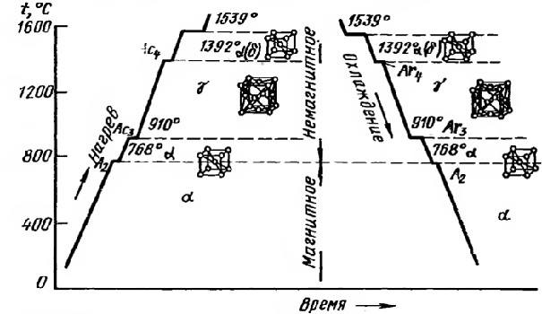
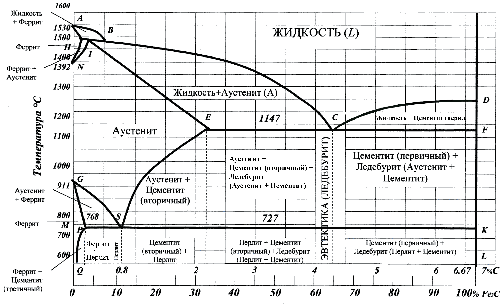

Железо — металл серебристобелого цвета. Чистое железо, которое может быть получено в настоящее время, содержит 99,999 % Fe, а технические сорта 99,8—99,9 % Fe. Температура плавления железа 1539 °С.
Железо известно в двух полиморфных модификациях α и γ. α-железо существует при температурах ниже 910 °С и выше 1392 °С. Для интервала температур 1392— 1539 °С α-железо нередко обозначают как δ-железо.
Кристаллическая решетка α-железа — объемноцентрированный куб с периодом решетки 0,28606 нм. До температуры 768 °С α-железо магнитно (ферромагнитно). Критическую точку (768 °С), соответствующую магнитному превращению, т. е. переходу из ферромагнитного состояния в парамагнитное называют точкой Кюри и обозначают А2.
Критическую точку α-γ превращення (рис. 1) при 910 °С обозначают соответственно Ас3 (при нагреве) и Аг3 (при охлаждении). Критическую точку α-γ превращення железа при 1392 °С обозначают Ас4 (при нагреве) и Аг4 (при охлаждении).
Кристаллическая решетка γ-железа - гранецентрированныи куб с периодом 0,3645 нм при температуре 910 °С. Плотность железа выше, чем железа, и равна 8,0-8,1 г/см3. При превращении α-γ происходит сжатие. Объемный эффект сжатия составляет примерно 1%.
Углерод является неметаллическим элементом. Углерод полиморфен. В обычных условиях он находится в виде модификации графита, но может существовать и в виде метастабильной модификации алмаза.
Углерод растворим в железе в жидком и твердом состояниях, а также может быть в виде химического соединения — цементита, а в высокоуглеродистых сплавах и в виде графита.
При этом в сплавах могут образовываться следующие структурные составляющие: феррит, аустенит, цементит, перлит, ледебурит и др.
Феррит — твердый раствор углерода и других примесей в α-железе.
Это почти чистое железо, так как растворимость углерода в железе чрезвычайно мала (0,006...0,03 %). Феррит устойчив до температуры 911 °С, имеет очень небольшие твердость и прочность, но высокую пластичность, поэтому хорошо деформируется в холодном состоянии (штампуется, прокатывается, протягивается). Чем больше феррита в железоуглеродистом сплаве, тем сплав пластичнее.
Аустенит — твердый раствор углерода и других примесей в γ-железе. Предельная растворимость углерода в у-железе — 2,14%. Предельная растворимость углерода в железе — 2,14 %. Характерная особенность аустенита в том, что он может существовать в железоуглеродистых сплавах только при высоких температурах (от 1539 до 727 °С). Аустенит по пластичности соизмерим с ферритом, но по твердости превосходит его примерно в 2 раза.
Цементит — это химическое соединение железа с углеродом — карбид железа Fe3C. В цементите содержится 6,67 % углерода. Цементит имеет сложную ромбическую решетку с плотной упаковкой атомов. Температура плавления цементита около 1600 °С. Содержание углерода в цементите составляет 6,67 %, и это самая твердая и хрупкая структурная составляющая железоуглеродистых сплавов. Цементит имеет высокую твердость и не обладает пластичностью. Чем больше цементита в железоуглеродистых сплавах, тем они тверже и более хрупки.
Перлит — механическая смесь феррита и цементиту, подразделяется на пластинчатый и зернистый в зависимости от формы кристаллов цементита, имеющих вид соответственно либо пластинок, либо округлых мелких зерен. Такую смесь называют эв-тектоидной, так как она хотя и подобна эвтектической, но образовалась в отличие от нее не при кристаллизации, а в процессе распада твердого раствора.
Ледебурит — эвтектическая смесь аустенита и цементита. Температура образования ледебурита 1147 °С. Он может существовать до температуры 727 °С, ниже этой температуры аустенит распадается на перлит и цементит.
Структурные составляющие сталей и чугунов
| Наименование | Краткое описание | Условие образования | Температуры устойчивости структуры | Физические свойства | Твердость HB |
|---|---|---|---|---|---|
| Аустенит | Твердый раствор углерода и других элементов в γ-железе. Содержит до 2% углерода | При затвердевании жидкого раствора с содержанием углерода не более 4,3% | Выше Ас3, Аст, Ас1 | Мягок, немагнитен, тягуч, мало упруг, обладает электрическим сопротивлением | 170-220 |
| Феррит | Твердый раствор углерода и других элементов в α-железе. Содержит до 0,006% углерода | При медленном охлаждении доэвтектоидной стали ниже Ar3, выделяется из аустенита | Ниже Ac3 | Мягок, очень тягуч, мало упруг, магнитен при температуре ниже точки Кюри | 60-100 |
| Цементит | Химическое соединение железа с углеродом - карбид железа Fe3C. Содержит 6,67% углерода | Первичный - из жидкого раствора при содержании углерода свыше 4,3%; вторичный - из аустенита при медленном охлаждении | Ниже Ac3 | Тверд, хрупок, магнитен до температуры 210 °С | 820 |
| Перлит | Эвтектоидная смесь цементита с ферритом | При медленном охлаждении аустенита в результате диффузии углерода | Ниже 723 °С | Более тверд и прочен, чем феррит, но менее пластичен, магнитен | 160-230 |
| Мартенсит | Твердый раствор углерода и других элементов в α-железе с искаженной тетрагональной решеткой | При охлаждении аустенита со скоростью выше критической | Ниже 150 °С | Хрупок, тверд, магнитен, теплопроводность и электропроводность низкая | 650-700 |
| Троостит | Высокодисперсная смесь феррита и карбидов | При нагреве мартенсита до 250-400 °С | До 500 °С | Магнитен, менее прочен и более электропроводен чем мартенсит | 350-450 |
| Игольчатый троостит | Высокодисперсная смесь феррита и карбидов | При изотермическом превращении аустенита в пределах температур 250-400 °С | До 500 °С | Тверд, малопластичен, магнитен | Свыше 350 |
| Сорбит | Дисперсная смесь феррита и карбидов | При нагреве мартенсита в пределах от 400 °С до Ac1 | До Ac1 | Пластичен, вязок, магнитен | 230-320 |
| Ледебурит | Эвтектическая смесь аустенита и цементита при температуре выше 723 °С и перлита и цементита при температуре ниже 723 °С. Содержит 4,3% углерода | При затвердевании жидкого сплава с содрежанием углерода свыше 2% | Ниже 1130 °С | Хрупок | 900-1000 |
На диаграмме состояния железо—углерод приведен фазовый состав и структура сплавов с концентрацией от чистого железа до цементита (6,67 % С).
Линии диаграммы определяют превращения в структуре и свойствах сплавов, происходящие при изменении температуры. Чистое железо плавится и затвердевает при постоянной температуре 1539 °С, все остальные сплавы железа с углеродом плавятся (затвердевают) и испытывают превращения структуры в некотором интервале температур.
Рассматривая эти превращения, можно выделить два их типа: превращение структуры сплавов при переходе из жидкого состояния в твердое (первичная кристаллизация) и превращения в твердом состоянии (вторичная кристаллизация).
Первичная кристаллизация для всех сплавов начинается при снижении температуры по линии ликвидуса ACD. При этом сплавы, содержащие 0...4,3% С, начинают затвердевать по линии АС с выделением зерен аустенита, а сплавы с содержанием углерода выше 4,3 % затвердевают по линии CD, выделяя зерна цементита, называемого первичным. В точке С при температуре 1147 °С и содержании 4,3 % углерода из жидкого сплава кристаллизуется одновременно аустенит и первичный цементит, образуется эвтектическая смесь — ледебурит, который присутствует во всех сплавах, относящихся к чугунам.
Кристаллизация сплавов заканчивается по линии солидуса AECF.
Дальнейшие изменения структуры сплавов происходят при понижении температуры в твердом состоянии, т.е. при вторичной кристаллизации.
Вторичная кристаллизация в сплаве железо—углерод связана с аллотропным превращением у-железа в a-железо и характеризуется линиями диаграммы GSEF и PSK.
Линия GS показывает начало превращения аустенита в феррит, поэтому в области GSP будет структура аустенит + феррит. Критические точки, лежащие на линии GS, обозначаются либо Ас3 при нагреве, либо Аг3 при охлаждении.
Линия SE показывает снижение растворимости углерода в железе с понижением температуры. Критические точки на этой линии обозначают Аст. Если в точке Е при температуре 1147 °С растворимость углерода максимальная и достигает 2,14 %, то в точке S при 727 °С растворимость углерода составляет всего 0,8 %. Следовательно, во всех сталях в интервале концентраций углерода 0,8...2,14 % из аустенита выделяется избыточный углерод, который, соединяясь с железом, образует цементит, называемый вторичным, а сталь имеет структуру аустенит + цементит вторичный.
Точка S является концом равновесного существования аустенита и называется эвтектоидной точкой. Она делит все стали на две типичные группы: левее точки S находятся доэвтектоидные стали со структурой феррит + перлит, правее — заэвтектоидные со структурой цементит вторичный + перлит. В точке S сталь содержит 0,8 % углерода, имеет структуру перлита и называется эвтектоидной.
При охлаждении аустенита с низким содержанием углерода в результате его превращения в феррит в области QPG образуется однофазная ферритная структура.
Для всех сплавов железо—углерод распад аустенита заканчивается по линии PSK (727 °С). Критические точки, лежащие на этой линии, обозначаются при нагреве Ac1 и при охлаждении Ar1.
Рассмотрим превращения структуры стали под воздействием температуры. Все описанные ранее структуры стали — ферритно-перлитная, перлитная и перлитно-цементитная — обратимы. Так, при нагреве доэвтектоидных сталей до температуры выше 727 °С (линия критических точек) перлит превращается в аустенит. При дальнейшем нагреве феррит растворяется в аустените и заканчивается процесс превращения по линии GS (критические точки). У эвтектоидной стали (0,8 % С) перлит превращается в аустенит в точке S. При нагреве заэвтектоидной стали перлит превращается в аустенит при температуре 727 °С (линия критических точек), и при дальнейшем нагреве происходит растворение цементита (вторичного) в аустените, которое заканчивается по линии SE (критические точки).
Таким образом, при нагреве стали до температур выше точки S и линий критических точек ее структура представляет собой аустенит. Однако вновь образующийся аустенит оказывается неоднородным, так как содержание углерода будет большим в тех местах, где находятся пластинки цементита. Для получения однородного аустенита необходимо не только нагреть сталь до температуры на 30...50°С выше критических точек, но и выдержать ее при этой температуре некоторое время для завершении диффузионных процессов.
На структуру стали и ее свойства оказывает влияние не только нагрев, но и режим охлаждения, от которого зависит характер структуры, образующейся в результате превращения аустенита. При медленном непрерывном охлаждении аустенит превращается в равновесные, т. е. устойчивые при нормальных температурах и нагреве до температур ниже критических, структуры — перлит, феррит и цементит. При быстром охлаждении будет иметь место переохлаждение аустенита и образуются новые неравновесные мелкозернистые ферритно-цементитные структуры — сорбит, троостит и бейнит, которые различаются между собой механическими свойствами и прежде всего твердостью вследствие наличия в структуре разных по размерам и форме пластинок феррита и цементита. Твердость этих структур возрастает по мере снижения температуры их образования.
Сорбит представляет собой более мелкую, чем перлит, механическую смесь феррита с цементитом и имеет твердость НВ 2500...3000 МПа, а также более высокие прочность и упругость при достаточной вязкости.
У троостита смесь феррита с цементитом мельче, чем у сорбита, и его твердость равна 3500... 4000 МПа. Троостит по сравнению с сорбитом обладает и более высокими упругими свойствами, но меньшей вязкостью.
У бейнита игольчатая структура состоит из несколько перенасыщенного твердого раствора, претерпевшего мартенситное превращение, и частиц цементита. Поэтому твердость бейнита выше, чем троостита.
Если сильно переохладить аустенит, то произойдет бездиффузионное превращение γ-железа в α-железо, в результате которого образуется пересыщенный твердый раствор внедрения углерода в железе — структура, называемая мартенситом. Данная структура состоит из игл разных размеров. Мартенсит имеет самую высокую из структурных составляющих сплавов железа твердость, хорошее сопротивление износу, но низкие эластичность и вязкость, большие внутренние напряжения. Он является основной закалочной структурой.
Основные превращения в железоуглеродистых сплавах при медленном нагревании и охлаждении
| Линия на диаграмме | Температура превращения, °С | Описание превращения | Обозначение критических точек |
|---|---|---|---|
| PSK | 723 | Превращение перлита в аустенит. Превращение аустенита в перлит | Ac1, Ar1 |
| MO | 768 | Потери магнитных свойств для сталей с содержанием углерода до 0,5%. Возникновение магнитных свойств для тех же сталей. | Ac2, Ar2 |
| GS | 723-910 | Окончание растворения феррита в аустените в доэвтектоидных сталях. Начало выделения феррита из аустенита в доэвтектоидных сталях. | Ac3, Ar3 |
| SE | 723-1130 | Окончание растворения цементита в аустените в заэвтектоидных сталях. Начало выделения цементита из аустенита в заэвтектоидных сталях. | Acm, Arm |
| IE | - | Начало плавления стали при нагреве. Окончание затвердевания стали при охлаждении | - |
| ECF | - | Начало плавления чугуна при нагреве. Окончание затвердевания чугуна при охлаждении | - |